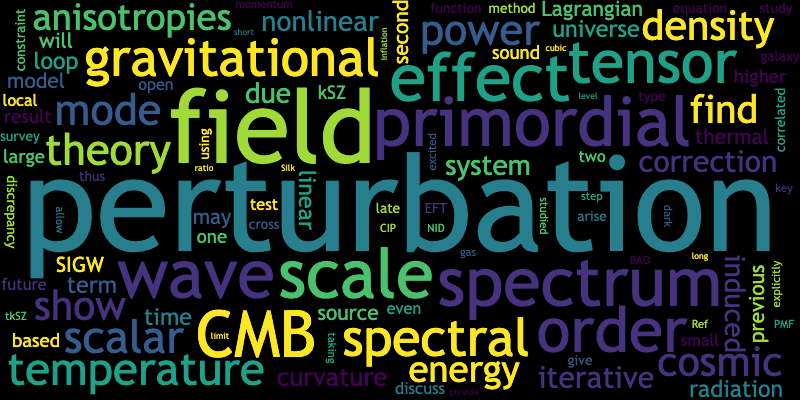

Research interests
I am interested in theoretical physics. Recently I'm mostly working on cosmology.

CURRICULUM VITAE
Research
- Associate professor, College of physics, Chongqing University, September 2023 - present
- IAS Postdoctoral Fellow, The HKUST Jockey Club Institute for Advanced Study, September 2021 - August 2023
- Postdoctral researcher, Physics & Astronomy Department, Ohio University, April 2020 - September 2021
- Oversea Research Fellow of the Japan Society for the Promotion of Science, DAMTP, University of Cambridge (main), April 2018 – March 2020
- Research Fellow of the Japan Society for the Promotion of Science (PD), Department of Physics, Tokyo Institute of Technology, April 2017 – March 2018
- Research Fellow of the Japan Society for the Promotion of Science (DC2), Department of Physics, Tokyo Institute of Technology, April 2016 – March 2017
Education
- Ph.D. in Physics, Tokyo institute of Technology, March 2017
- M.S. in Physics, Tokyo institute of Technology, March 2014
- B.S. in Physics, Tokyo institute of Technology, March 2012
Membership
- Dark Energy Spectroscopic Instrument (DESI), April 2020- September 2021
- UK cosmo, December, 2019 - present
- The Japan Physical Society, March 2011 - present
- Rironkon (Theoretical Astrophysics society in Japan), November 2014 - present
Teaching
- Teaching assistant at Tokyo Institute of Technology, October 2012 – March 2017,
Mechanics, Electromagnetism, Analytical Mechanics
Papers and presentations
- A list of publications is found in HEP inspire.
Recodings
- Probing fundamental physics with CMB spectral distortions: "CMB spectroscopy for primordial non Gaussianity"
- “早期宇宙与阿里原初引力波探测实验”线上论坛 (Early Universe and AliCPT Forum): "Scale-invariant enhancement of gravitational waves during inflation"